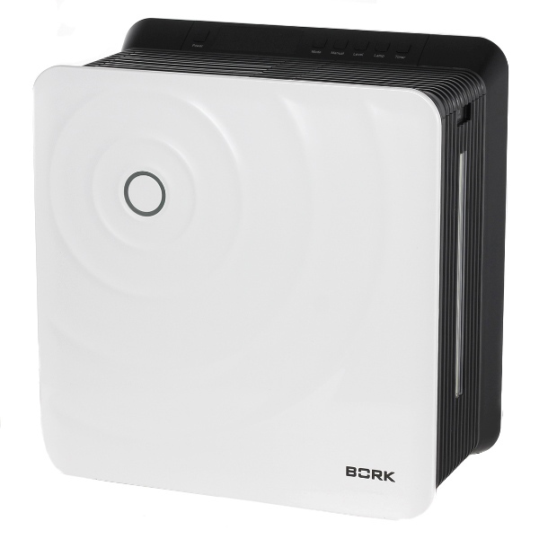
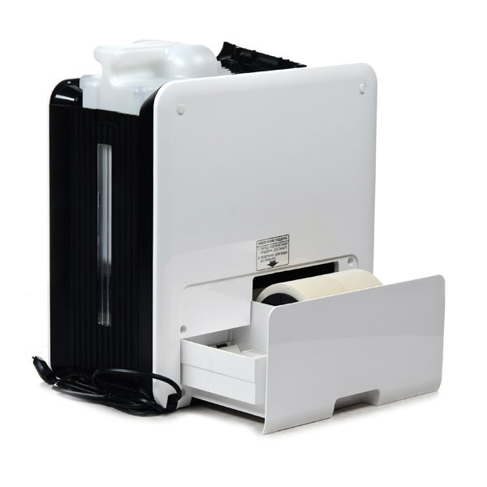
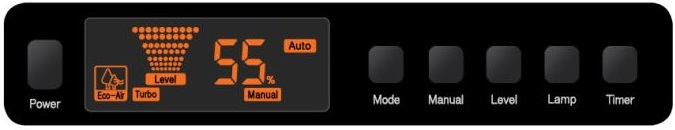
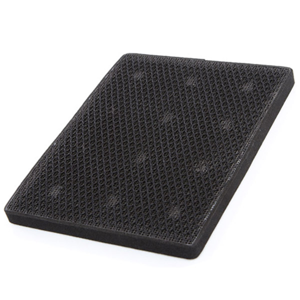
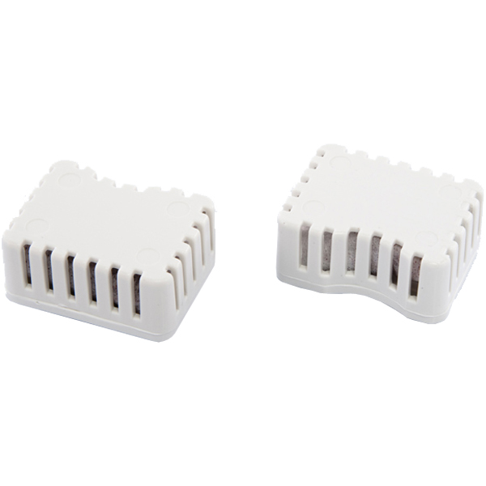
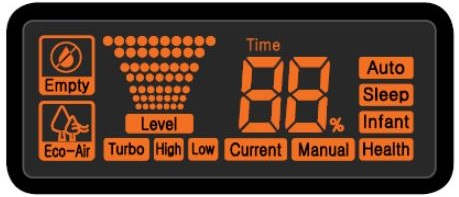
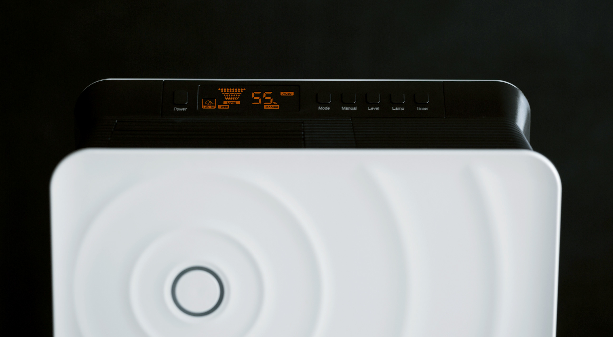

Мойка воздуха BORK Q700
Совершеные технологии по увлажнению и очистке воздуха
Мойка воздуха BORK Q700 является полностью автоматическим комплексом для одновременной очистки и увлажнения воздуха путем естественного испарения воды. Цифровой гигрометр, четыре автоматические программы и «ручной» режим работы обеспечивают эффективную очистку воздуха и оптимальную влажность в любое время года.
Поддержание естественой влажности
Увлажнение воздуха путем естественного испарения воды, с медицинской точки зрения, является самым оптимальным для детей, взрослых и домашних животных. При естественном увлажнении на мебели, бытовой технике и паркете не образуется белый налет кальция.
Очистка воздуха
Мощным природным фильтром для очистки воздуха является вода. Загрязненный воздух проходит через систему влажных дисков, где водой задерживаются все частицы размером до 10 мкр: аллергены, домашняя пыль, альдегиды, табачный дым, пыльца растений и частицы шерсти домашних животных.
Автоматические режимы работы
Встроенный цифровой гигрометр и четыре автоматических режима непрерывно обеспечивают оптимальную работу устройства без необходимости постоянного контроля со стороны человека.
Автоматический режим
Автоматическая работа прибора по поддержанию относительной влажности в помещении 55%.
Режим «Детская комната»
Прибор автоматически поддерживает в помещении рекомендованную для детей относительную влажность воздуха 50~60%.
Режим «Здоровье»
Специальный тонизирующий режим, способствующий укреплению здоровья. Мойка поочередно переключает режимы увлажнения: турбо/сильное/слабое увлажнение для имитации естественного изменения влажности в природе, оказывающей благоприятное воздействие на здоровье человека.
Ручной режим manual — установка желаемой влажности. Диапазон значений — 40-75%, шаг установки — 5%.
СO — непрерывный режим работы.
Примечание. При достижении заданного уровня влажности в помещении мойка воздуха автоматически отключится, при этом на дисплее будут попеременно отображаться значения заданной и текущей влажности. При работе в непрерывном режиме (Сo) в течение 3-х часов, мойка воздуха автоматически переключится на уровень влажности 75%.
Бактерицидные свойства система eco air
Для обеспечения прибору высоких бактерицидных свойств он оснащен системой очистки ECO-AIR.
Предварительный фильтр очистки воздуха, внутренняя поверхность прибора и фильтрующие диски обработаны антибактериальным органическим комплексом OMCA (organic metal complex anti-bacteria), обладающим мощными бактерицидными свойствами. Воду в резервуаре стерилизует съемный картридж OMCA.
Информативный дисплей
Индикация отсутствия воды
Empty — низкий уровень воды в резервуаре. После заполнения резервуара для воды необходимо примерно 20 секунд для того, чтобы вода попала на поддон — подождите, пока погаснет индикатор низкого уровня воды.
Мойка воздуха BORK Q700
Технические характеристики
Напряжение: 220–240 В
Потребляемая мощность: 28 Вт
Частота: 50 Гц
Производительность: 350 мл/ч
Эффективная площадь увлажнения: 35 м2
Эффективная площадь очистки: 25 кв. м2
Емкость резервуара для воды: 4 л, рассчитана на 16 ч непрерывной работы